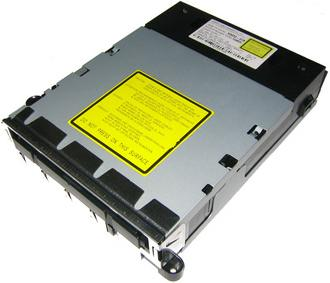
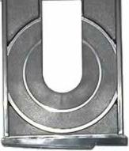
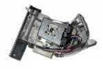
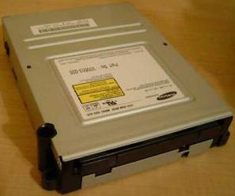
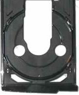
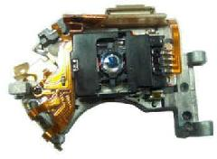
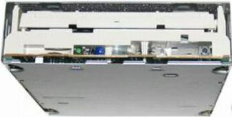
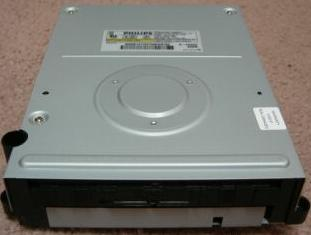
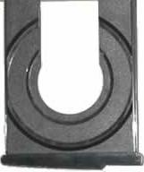
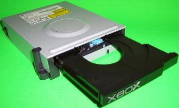

DVD DRIVE
INFORMATION - COSMETICS - SPECS - MORE
DVD DRIVE
INFORMATION - COSMETICS - SPECS - MORE
FOUR OEM drives have been chosen
for use in the Xbox system. This
page will show them, and briefly explain them, along with any specs
known for the drive. These drives can not be used in a PC, and
are specifically designed for use in the Xbox.
First off lets explain how the Xbox DVD drive works, and why you can't
use a regular PC drive, or use the Xbox drive in a PC.
The Xbox DVD drive is made to work backwards, meaning, the discs are
read from the outter portion and reads in towards the center hub.
The servo motor in the unit is placed and wired to work in this
manner. Not only that, the firmware in the drive's EEPROM is made
to read this way also.
All Xbox DVD Drives will work in any other Xbox, and the front door
part of the tray will also transfer to any other DVD drive's
tray. I replaced a Phillips DVD drive with a Thompson in my
Halo Edition Xbox, and everything was100% interchangable!
Next is the 12-pin connector with the yellow wires that plugs into the
unit, which is a custom plug. Four are used for power &
ground, two used for tray in and out, one for Eject, one for CD ready,
and one for Serial Data which is not used, and two not used.
01 12
Ej Gr - Eject / Ground
M1 Ot - Disc Ready / Tray Out
SD In - Serial Data / Tray In
05 12 - +5VCD / +12VCD
Gr Gr - Ground / Ground
xx xx - No Conenctions
06 07
You won't have to take your
Xbox apart to see which one you have. I have a small picture of
what the tray looks like when ejected, so you can look for
yourself.
THOMPSON TGM600:
The thompson drive
was the first DVD drive to be used in the Xbox.
Unforunately, it is the worst drive on market, with the highest failure
rate than any other DVD drive used in the Xbox.
The common reason for Failure is the LASER burns out.
INDENTIFY BY:
 LOGIC BOARD
2X to 5X Read Speed
Will not read CD-Rs
Reads very few (generally low speed [2x], Memorex) CD-RW
Reads DVD-R/RW
Reads DVD+R/RW

Laser / Lense pickup.
SAMSUNG SDG605:
The second drive
introduced to the Xbox was the Samsung. This drive is by far, the
best one they put into the xbox. Out of all the
Xboxs I have had, the one with the Samsung has outlasted them
ALL! Even
the New Halo Edition Xbox's DVD drive (Phillips) did not last more then
six months!
IDENTIFY BY:


Laser / Lense pickup.
Supported Media: DVD-R, DVD+RW,
CD-R, CD-RW (These have all worked for me).
Reads some CD-R/RW
Reads DVD-R/RW
Reads very few DVD+R/RW
A later revision of the Samsung DVD drive lost some Media
compatibility.
SAMSUNG SDG-605 / Part No: X00603-005 = WILL PLAY CDR (Found in
later 2003 and early 2004 XBOX�s)
SAMSUNG SDG-605 / Part No: X00603-006 = WONT PLAY CDR (Found in later
2004 XBOX�s)
MODIFIED SAMSUNG 616T
This is a drive for
the PC that can be modified to work in an Xbox. Jumper
wires need to be run to the Servo motor to reverse polarity, to a
custom 12-pin header, and the firmware needs flashed with the 605Gs
firmware.
This drive is the Ultimate DVD drive for the Xbox.
This will probably out last the Xbox itself.
Specifics:
- 16x maximum read speed (DVD) - 48x maximum read speed (CD) - 110 ms
average access time (DVD)
- 90 ms average access time (CD) - 512 KB buffer
Supported Disc Formats
- DVD-ROM - DVD-R - DVD-VIEDO - CD-ROM - CD-R - CD-RW - CD-DA -
CD-ROM/XA - VIDEO-CD
- CD-I/FMV - Photo CD - CD-Extra - Mixed CD - CD Text
PHILLIPS VAD6053:
Another drive
introduced into the XBox sometime in 2004. The HALO EDITION came
with this drive. Unfortunately, this one fairs no better than the
Thompson.
Common failure is the Laser completely burns out. Mine went in
6-months, with less than a months TOTAL play-time. No
intermittent problems, it just went out.
IDENTIFY BY:
 LOGIC BOARD
Laser/Lens Pickup
Reads very few CD-R
Reads some (low speed) CD-RW
Reads DVD-R/RW
Reads some DVD+R/RW
HITACHI GDR1050L
Yet
another drive used in the Xbox, and is very similatr looking as the
Phillips. The noticable difference besides the label is the
spindle hump on top. The Phillips has three circular marks in it,
the Hitachi does not.
The tray is different in this drive also, but you can tell it is not
either of the three above by looking at the tray.
Failure rate not known at this time. Supposed to be as good as
the Samsung.
Manufacturer Date is around 9/24/2004, Saw one with October 1994.
Supported Media: DVD-+R, DVD-RW, CDRW
The drive
has a smaller white 12-pin connector cable instead of the
yellow.
Disc tray looks a lot like the Thomson's, but
with a wider cutout.
MODIFIED PIONEER 500M
Full Xbox compatibility with the hardware and firmware modification.
16X DVD/40X CD-ROM - 256k buffer - 95ms DVD-Rom High-Speed Average
Access Time - 80ms CD-ROM access time. Reads single and dual layer
DVD-ROM/Video, -R/RW, CD-ROM, Audio CDs, CD-R/RW, Video CDs, Photo CDs,
Hybrid CDs, CD-Extra (CD-Plus) and CD-Text Discs.
MODIFIED SONY DDU1612
INSTRUCTIONS
Found on: http://www.xboxhackz.com/Hackz-Projects.htm
MODIFIED
HITCACHI GDR-8163b
You can find the GDR-1050L (Xbox Drive) firmware for this drive.
Limited information is Available for modifying this drive. This
firmware with flashing software is suppled by LenteSubigo.
TESTED PC DRIVES WITH MODCHIP IN XBOX
These drives are UNMODDED:
LG8160B, Pioneer DVD-105SZ , PIONEER DVD-106S , LITE ON 16x &
SD-M1612 toshiba.
You have to have a MODDED Console,
first off.
You have to connect the drive to the XBOX, leaving the original
in. Use "Y" cable for the power plug to the HDD, and use one for
the PC DVD. Remove the IDE CABLE from the Xbox DVD, and plug into
PC DVD. Leave the the connector in the Xbox drive.
BAD XBOX DVD DRIVE:
Insert nothing in the xbox-drive.
Open the PC drive and insert disc.
Close the PC drive.
Reset Xbox. (reset button or "reboot xbox" in EvoX).
Game should launch.
For DVDmovies you can do exactly
the same.
This also works, even if your original DVD drive works, but you want a
wider range of media use.
NOTE:
1 - You can NOT play original discs this way , you will have to
reconnect the IDE-cable to the Xbox DVD-drive if you want to play an
original games, that is, if your original DVD drive still works.
2 - You will have to keep your xbox open. Make sure you protect it from
dust.
3 - It's unsure if this tricks works with ALL PC DVD-drives.
DVD
Copy Protection
Each XBox Game is copy-protected so you can't just make a 1:1 copy of
the DVD in a PC. The copy-protection consists of two main parts.
First the DVDs contain a CSS copy-protection. This protection could
perhaps be removed by using DVD-R(A)s or special versions of DVD+Rs. In
addition, the TOC of the DVD is signed with by a RSA key. This TOC also
contains the number of layers the DVD has. Pressed DVDs have two
layers, burned DVDs have only one. That's why we can't burn a DVD that
can run on an unmodded XBox, except we would have the private RSA key.
FILE SYSTEM
The Xbox does not use the ISO9660 or UDF filesystem for its game DVD,
but can boot a DVD with a UDF file syste. The Xbox uses a
proprietary, and very simple one, called XDVDFS, described elsewhere.
The Xbox kernel only supports three filesystems: FATX for hard disk
partitions, UDF (used on DVD Video) and XDVDFS. It will boot from CDs
or DVDs in UDF or XDVDFS format it it contains a valid and signed
default.xbe.
VOLUME DESCRIPTOR
This is present at sector 32 of
an XBOX medium.
< style="color: rgb(255, 255, 255);">(Offsets are from start of
sector)
|
Offset
|
Size
|
Description
|
|
0x000
|
0x14
|
“MICROSOFT*XBOX*MEDIA”
|
|
0x014
|
4
|
Sector that root directory table resides in
|
|
0x018
|
4
|
Size of root directory table in bytes
|
|
0x01c
|
8
|
FILETIME structure representing image creation time (as in
FAT-style date/ FAT-style time).
|
|
0x024
|
0x7c8
|
Unused (?) (set to 0)
|
|
0x7ec
|
0x14
|
“MICROSOFT*XBOX*MEDIA”
|
- If the root directory is empty, the sector and size will both be
set to 0.
DIRECTORY TABLE
This consists of
multiple DIRECTORY
ENTRIES.
Any empty space is filled with
0xff.
The table may span multiple
contiguous sectors.
DIRECTORY ENTRY
Directory entries within a single
directory
are stored as a binary tree data structure, to decrease search time.
Each entry has a left and a right pointer, pointing to the left and
right sub-trees descendant from the current entry. Entries
alphabetically less than the current entry should be stored in the left
sub-tree, while entries alphabetically greater should be stored in the
right sub-tree.
Long filenames supported up to
128 characters per entry. This is much higher compared to the HDD
limit of 42 character entries.
The root of this tree for any
particular directory is the directory entry situated at offset 0 of the
first sector of the directory table.
(Offsets from start of directory
entry)
|
Offset
|
Size
|
Description
|
|
0x0000
|
2
|
Offset to left sub-tree entry in DWORDs. If this is
set to 0, there are no entries in this sub-tree.
|
|
0x0002
|
2
|
Offset to right sub-tree entry in DWORDs. If this is
set to 0, there are no entries in this sub-tree.
|
|
0x0004
|
4
|
Starting sector of file. Each file may consist of multiple
contiguous sectors.
|
|
0x0008
|
4
|
Total file size.
|
|
0x000C
|
1
|
File attributes (mostly standard FAT attributes):
- 0x02: File is hidden
- 0x04: File is system file
- 0x10: File is a directory (associated
sector(s) will have an XDVDFS directory table stored in them)
- 0x20: File is an archive.
- 0x80: Normal (i.e. lacking any other
attributes) (?)
|
|
0x000D
|
1
|
Length of filename
|
|
0x000E
|
<filename length>
|
Filename. Characters are single-byte, probably using standard
FAT character map.
|
|
0x000E + <filename length>
|
<0-3>
|
Padding to next DWORD (filled with 0xFF).
|
- If a sub-directory is empty, the sector and file size of its
entry in its parent will both be set to 0.